A calendar with no noise,
with character.
Your year, at a glance. Your day, with history.
Now on the App Store Download for freeiPhone · iOS 18 or later · nine languages
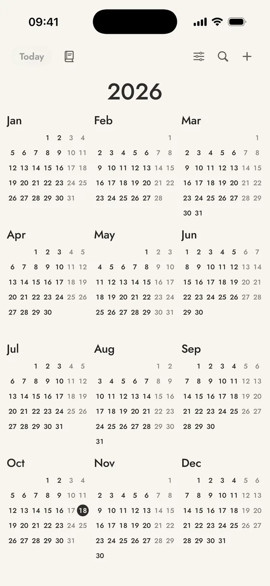
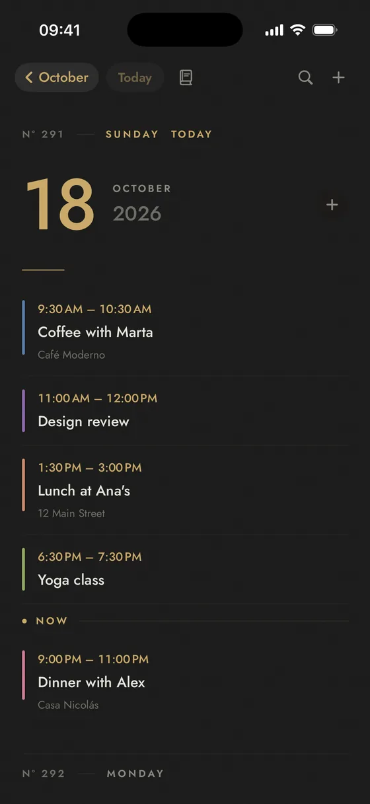
From the year to the day, no jumps.
Year, month and day chained in a single scroll. No tabs, no menus: tap to go in, swipe to come out.
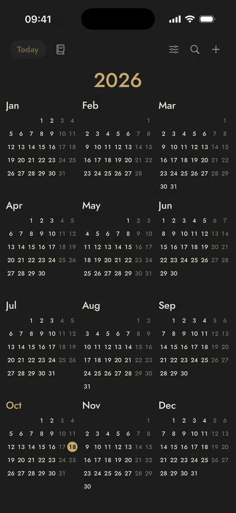
Year
All twelve months at a glance. Each year carries its own title and scrolls away with the calendar, like a page.
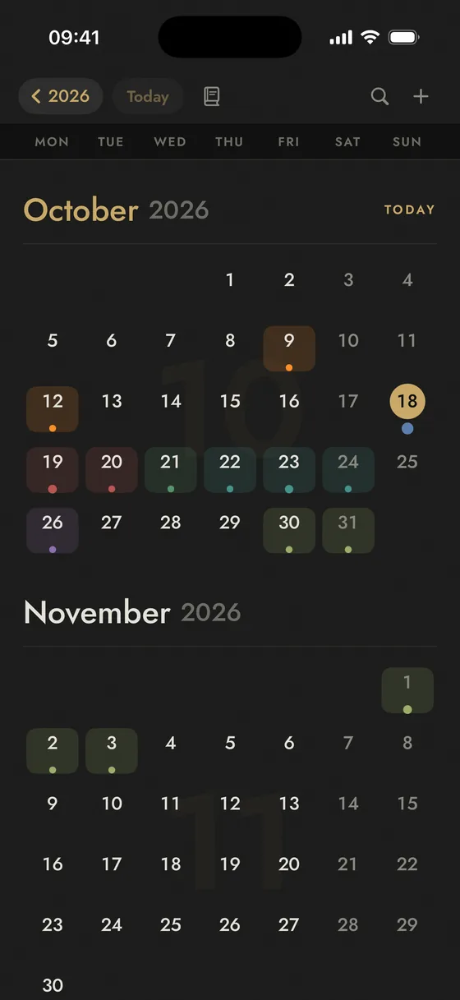
Month
Continuous scroll, month after month. Days with something on them take the colour of their event.
Day
Your agenda forwards and backwards, no arrows. With the time, the place and each event's colour stripe.
Fact of the day
18
October
Louis XIV revokes the Edict of Nantes
In 1685, France outlawed Protestantism and drove hundreds of thousands of people into exile.
Every morning, one fact for the date.
Written calmly, with its year and category, and a link to Wikipedia to keep reading.
- One for every day of the year, February 29 included.
- In your language: all nine in the app.
- A quiet nudge each morning, if you turn it on. If not, it waits for you when you open the app.
Eleven looks. Two free, nine with Plus.
Each with its own base and ink, made to read well by day and by night. Switch with a tap, and the widgets follow.
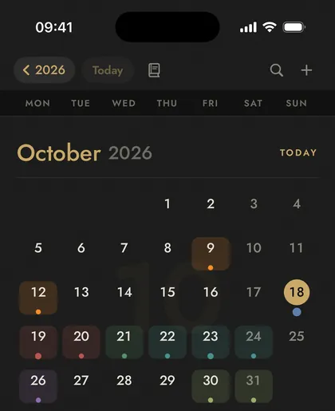
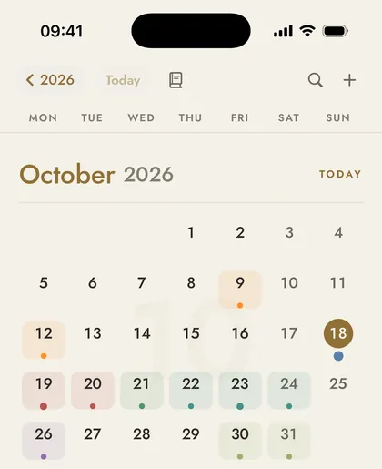
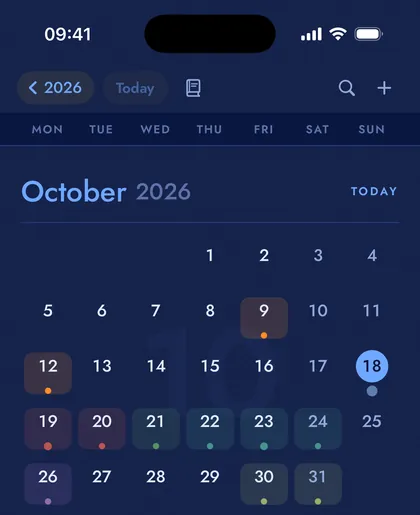
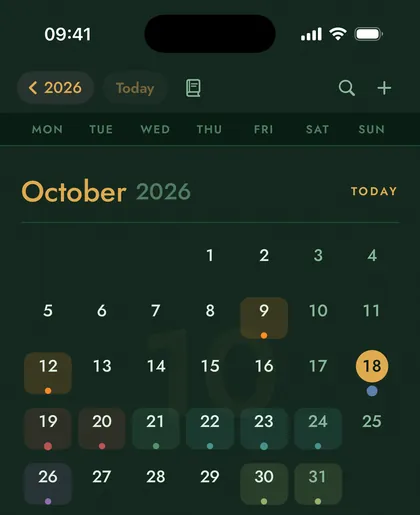
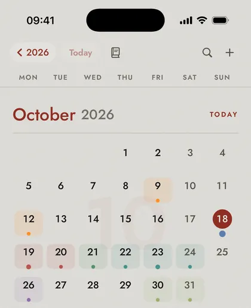
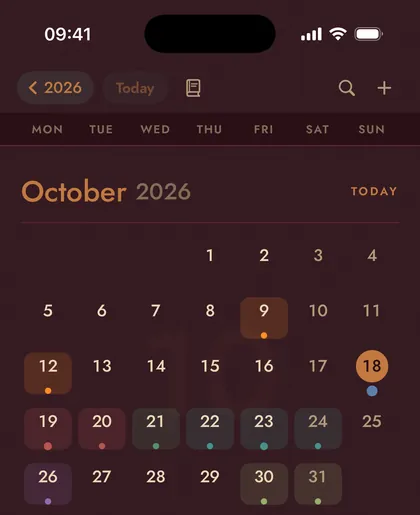
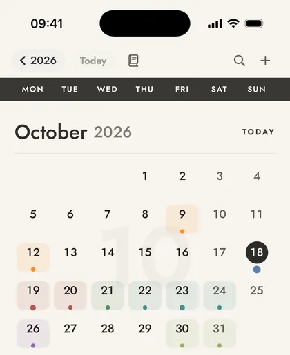
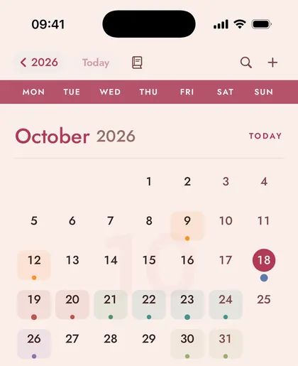
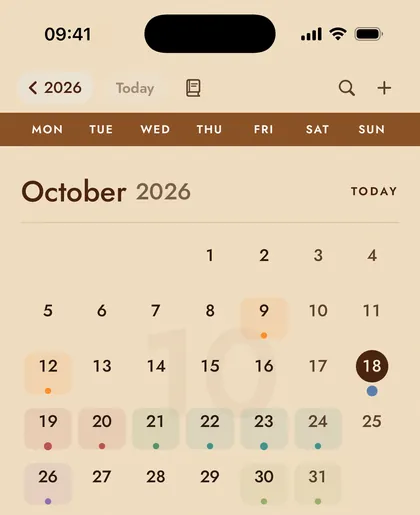
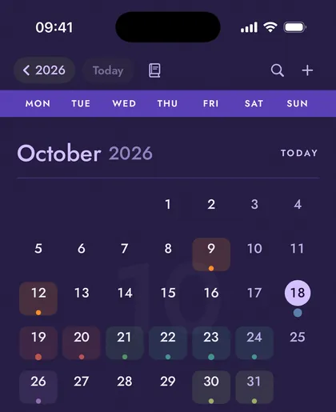
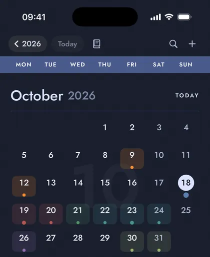
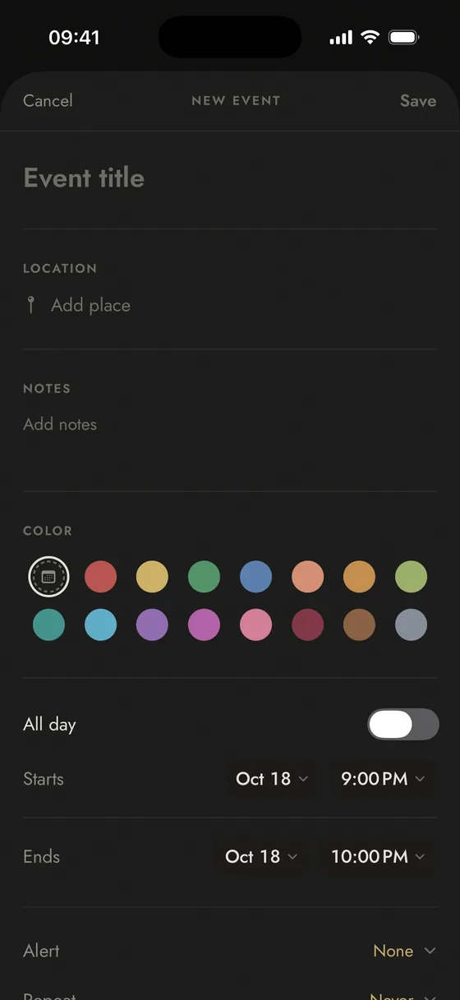
On the calendar you already use, in your colour.
Marrow uses your iPhone's calendar: what you add shows up in your other apps and travels through your iCloud.
- Create and edit with repeats, alerts, location search through Apple Maps, notes and a link.
- Alerts that arrive: Marrow schedules its own, even when Calendar's notifications are off.
- A colour per event, so you can tell work from the weekend at a glance.
- Search by title, place or notes, accent- and case-insensitive.
Four colours free, eleven more with Plus.
Nine languages, yours among them.
The app, the widgets, the alerts and each day's fact, in the language you choose. By default it follows your iPhone's.
The app is complete. Plus makes it yours.
One payment, forever, no subscription. It restores on all your devices with your Apple ID.
Free
Marrow
Everything you need, no catch.
- Year, month and day in one continuous scroll
- The fact of the day and its morning nudge
- Events with repeats, alerts, location and search
- Two looks (Black and White) and four event colours
- Widgets for the fact of the day and today's agenda
- Nine languages
One payment
Marrow Plus
Forever. No subscriptions.
- Nine more looks: Cobalt, Juniper, Linotype, Merlot, Ivory, Cocoa and rose, Toasted, Nebula and Eclipse
- Eleven more colours for your events
- Countdown on the Home and Lock Screens
- Wider agenda widget: it looks beyond today
- Attachments on every event: the ticket, the receipt, the booking PDF
- Widgets without the mark
What's yours stays yours.
No accounts
No sign-up, no login. You open the app and that's it.
No ads, no analytics
No trackers or third-party SDKs. We don't know what you do with your calendar.
No server
Your events live in your iPhone's calendar and your iCloud. Marrow keeps no copy.
A calendar with 366 reasons to open it.
Not a new calendar. The one you already have, without what it didn't need.
Now on the App Store Download for free